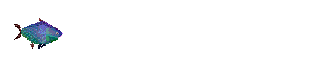

About us
Tell us what you think...please!
The Science Blog Pond
Pick your filters and move the sliders to find your science blog!
 Loading Science Blogs
×
Take me to the blog
Add to my favourites
Unfavorite
Frequent Posts
Ocassional Posts
More Images
More Text
Science brain
Non science brain
Serious
Fun
Technical stories
Personal stories
Favourites
Unfavorite